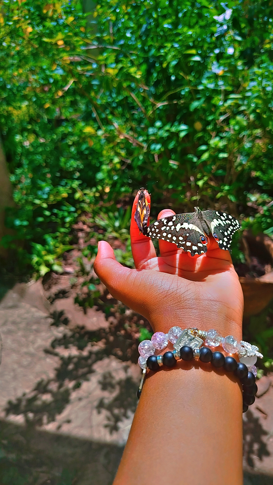

My Favourite Images
These are some of my favourite images I have captured over the years.

- 
Photography is the art of capturing images using a camera, to record moments and scenes.
This website is used to show the kind of images I have captured and the memories they have left on me.
These are some of my favourite images I have captured over the years.
These photos has memories which will remind me of the past when the future comes